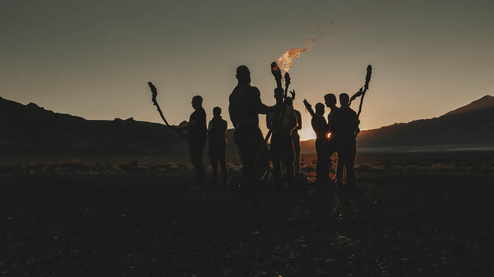
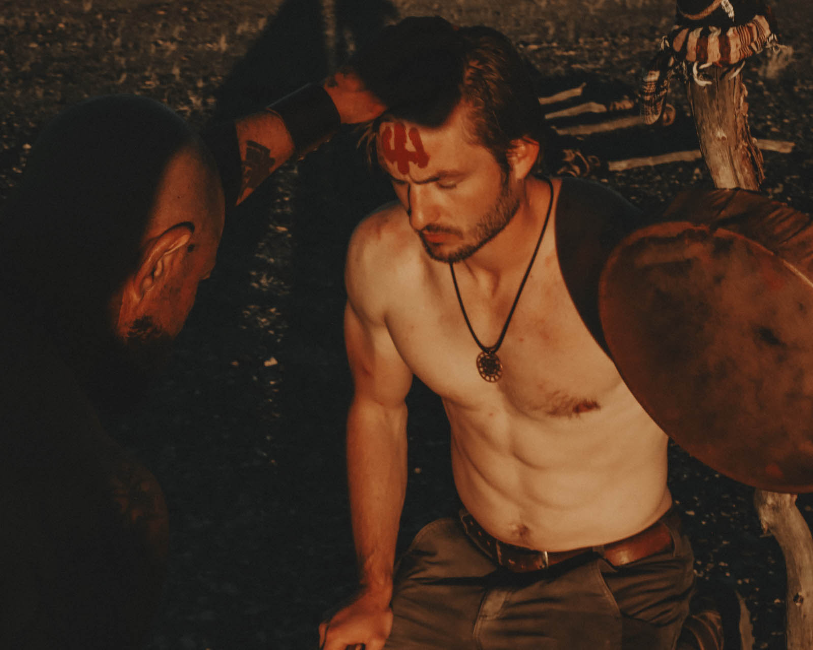
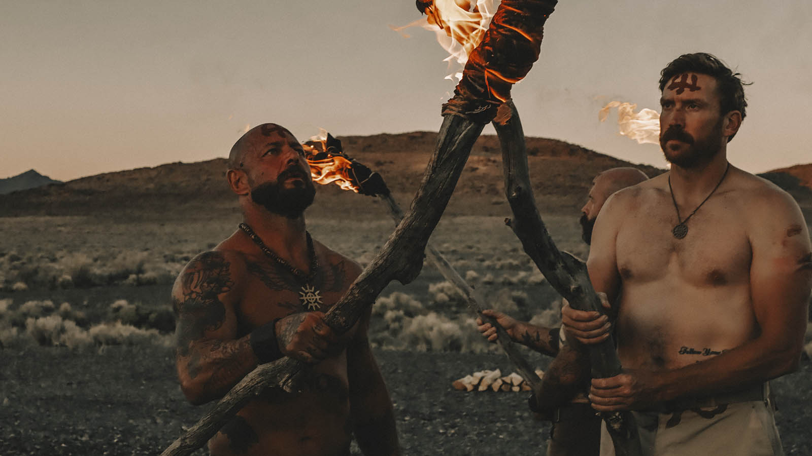
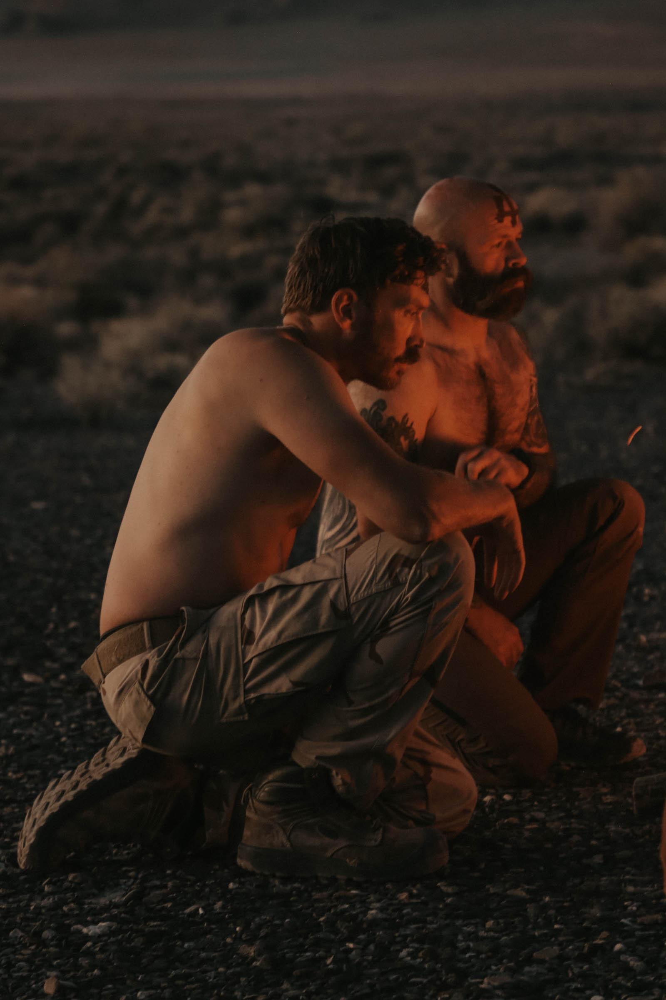
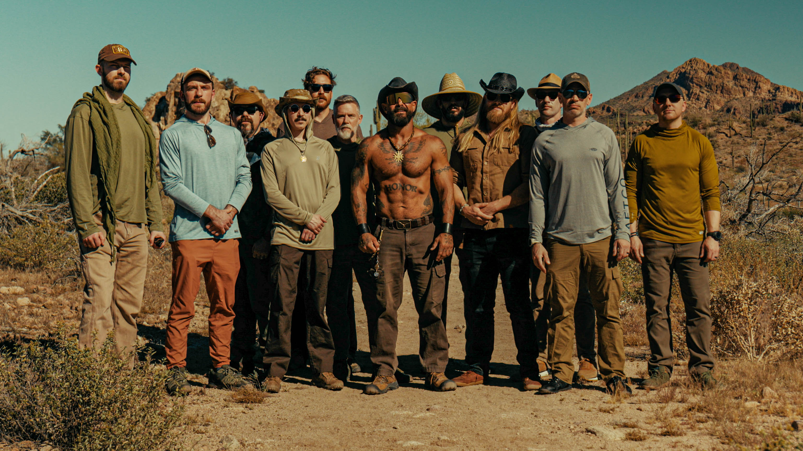
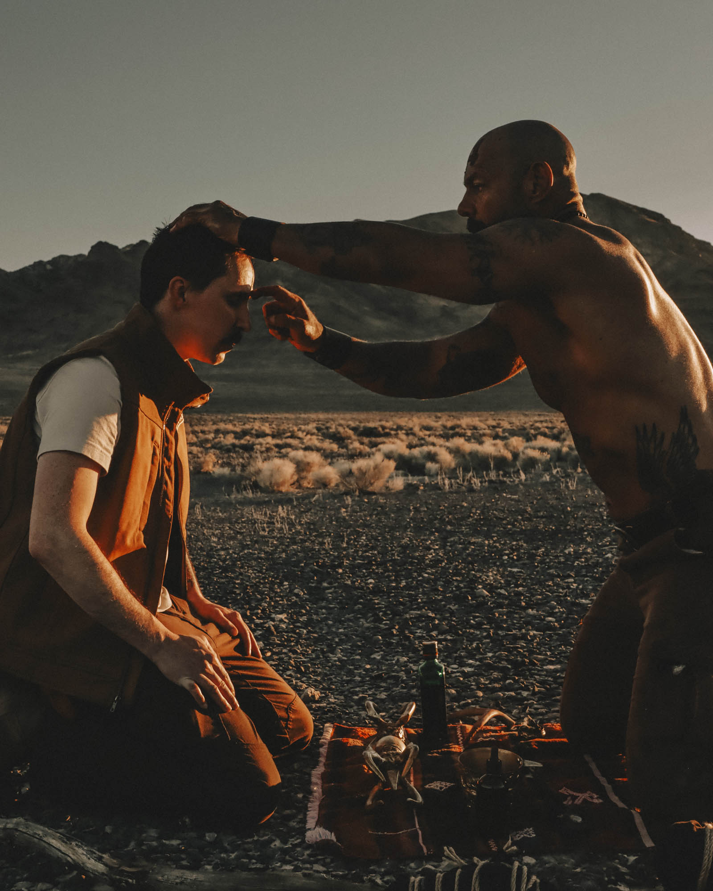
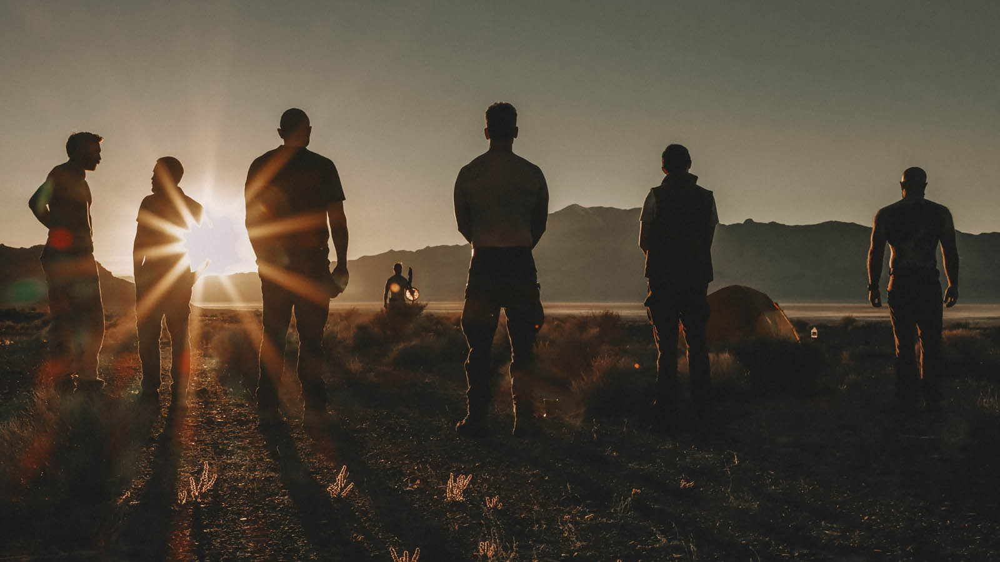

05Previous Rituals
Sixteen Fires
As of November 2026, the Order of Fire has performed 16 Fire Rituals, from the salt flats of Utah to the Arizona desert.








The Order of Fire's next Fire Ritual will be held in Arizona in late March 2027. If you wish to attend, apply to join The First Men.
Late March2027 · exact dates go to members
ArizonaUnder the open desert sky
The First MenA fraternal order for Solar Idealists
16 RitualsPerformed by the Order as of Nov 2026

“If we cannot determine what is sacred to us, then everything is profane by default.”
Fire in the Dark
The Order The Order of Fire is the manifestation of Solar Idealism, a mythic philosophy for men.
Solar Culture recognizes the power of individual and group rituals. The Fire Ritual is where that philosophy is enacted: light over darkness, order over chaos, truth over falsehood.
It is not a spectacle to watch. It is a rite men stand inside, together, as The First Men.
Read the Philosophy →Ten affirmations shared across the Order. Each names what a man chooses, and what he refuses.
The Father creates and oversees Order.
The Striker champions Order.
The Lord of the Earth perpetuates Order.
As of November 2026, the Order of Fire has performed 16 Fire Rituals, from the salt flats of Utah to the Arizona desert.






The First Men is a fraternal order for Solar Idealists. The Ritual is held for its members. Being one of The First Men requires effort. It's not a disposable identity.
You do not have to be perfect to join. You have to be a Solar Idealist with First Man energy. Tell us who you are.
Apply Now →Members gather in regional Fires across the South, the Northeast, the central and western US, Australia, Western Canada and Europe.
How It WorksCome to Arizona in late March 2027 and take your place at the fire with your brothers in the Order.
The RitualCan't make the Ritual? The Order also welcomes aligned members who don't have time to participate but simply support its work.
Men of the Earth, looking forever upward. The fire is lit in Arizona this March.
Apply to Join The First Men →